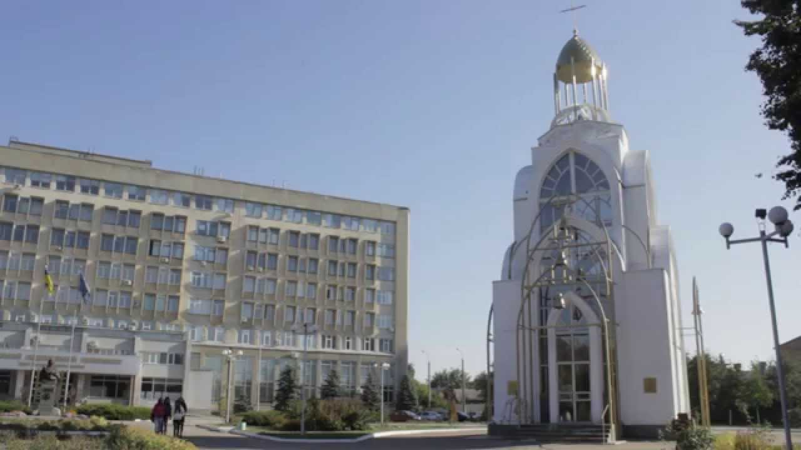

Мій ЗВО
Мій ЗВО: Черкаський національний університет імені Богдана Хмельницького
Черкаський національний університет імені Богдана Хмельницького (ЧНУ) — один із провідних закладів вищої освіти Центральної України. Заснований у 1921 році, університет має багату історію та традиції, що поєднуються з інноваційними підходами до навчання і наукової діяльності.
Основні переваги ЧНУ
1. Сучасна матеріально-технічна база
ЧНУ забезпечений сучасними навчальними корпусами, лабораторіями, бібліотеками та спортивною
інфраструктурою.
2. Різноманіття освітніх програм
Університет пропонує навчання за багатьма спеціальностями, зокрема:
• Філологія
• Інформатика
• Юриспруденція
• Економіка
• Природничі науки
• Педагогіка та інші.
3. Наукові досягнення
ЧНУ активно сприяє науковій діяльності, підтримуючи студентів у дослідницьких проектах і міжнародних
конференціях.
4. Міжнародна співпраця
Університет співпрацює з багатьма закордонними ЗВО, надаючи студентам можливість брати участь у
програмах обміну.
5.Студентське життя
У ЧНУ діють численні гуртки, спортивні секції, творчі колективи, що сприяють всебічному розвитку
особистості.
Місія університету
Головна мета ЧНУ — формування конкурентоспроможних фахівців, які здатні вирішувати сучасні професійні
завдання та вносити вклад у розвиток України.
Черкаський національний університет імені Богдана Хмельницького — це місце, де навчання поєднується
з
натхненням, а наука стає основою для нових відкриттів і досягнень. br
Більше інформації про університет ви можете знайти на офіційному сайті ЧНУ.